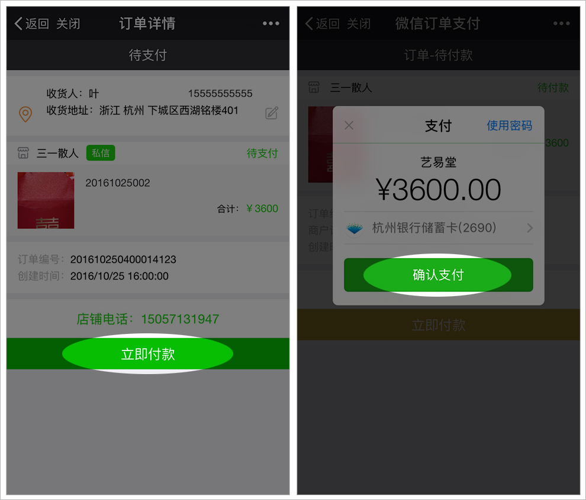

1、如何进入艺易堂
微信-->通讯录-->公众号-->点开右上角的“+”输入“艺易堂”，点开搜索到的“艺易堂”点击“关注”，进入公众号。点击进入拍场进入“艺易堂”。
2、如何参拍
点击感兴趣的拍品 --> “出价”，如果卖家设置了保证金，则需先缴纳保证金（保证金在拍品结束拍卖后回退还）。保证金缴纳完毕后，可正常出价竞拍:

3、如何付款
当竞拍成功后，系统会自动生成订单。请前往，我的-->我买到的 里面查看订单填写收货地址，并进行付款操作。付款后，卖家发货，买家确认收货后，货款将支付给卖家。如果遇到问题请联系客服。

4、如何开店
点击首页上的我要开店，进入资料提交页面填写和提交资料，待平台审核通过后，缴纳相应的消保金之后，即可成功开店。
5、如何上传拍品
艺易堂给客户准备便捷的上传拍品入口

填写好资料和上传完图片后，可先保存到库存。也可上传后直接上架直接上架拍卖。上架拍品需填写的资料包括结拍时间、起拍价、加价幅度、市场价、保证金、是否7天包退、是否包邮。有些信息非必填项。具体请按系统提示选择。
6、如何提现
进入我的 --> 财务管理 --> 总收入 --> 申请提现 ，申请后等待系统处理完毕即可，一般在3个工资日内可完成（节假日顺延）